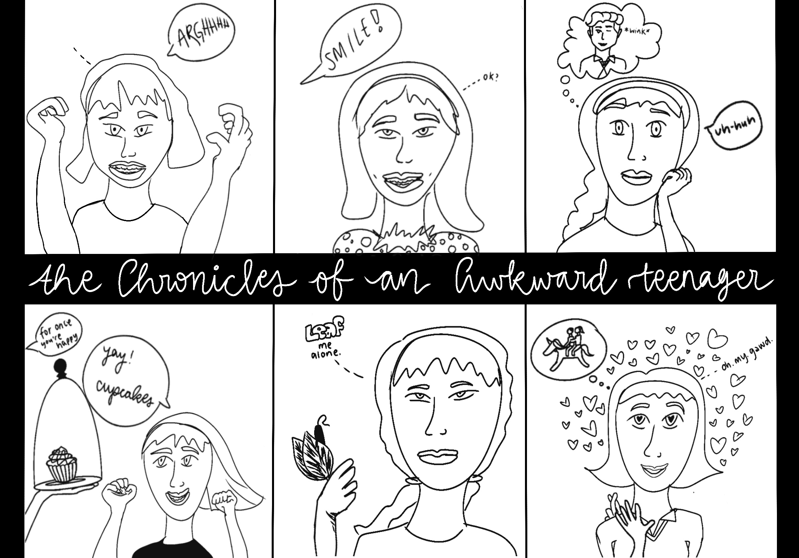
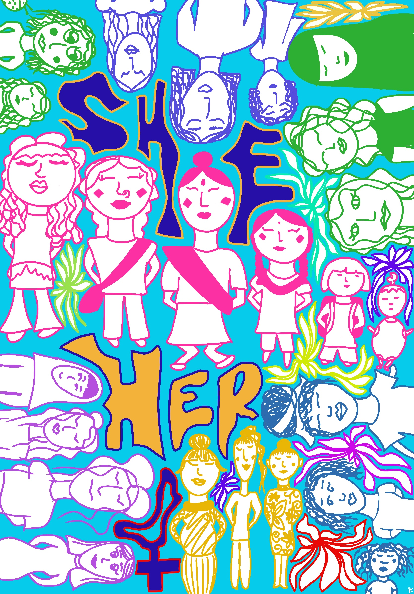
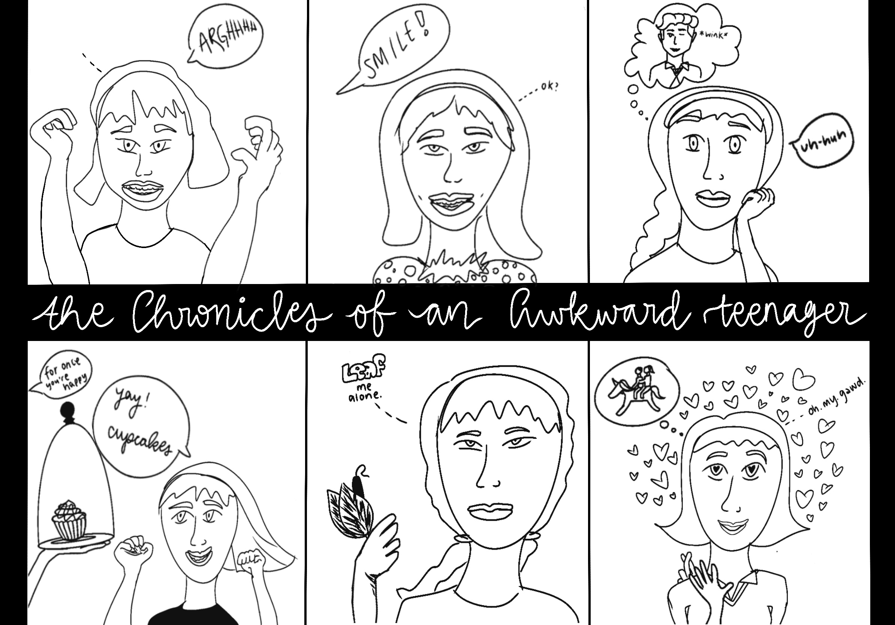
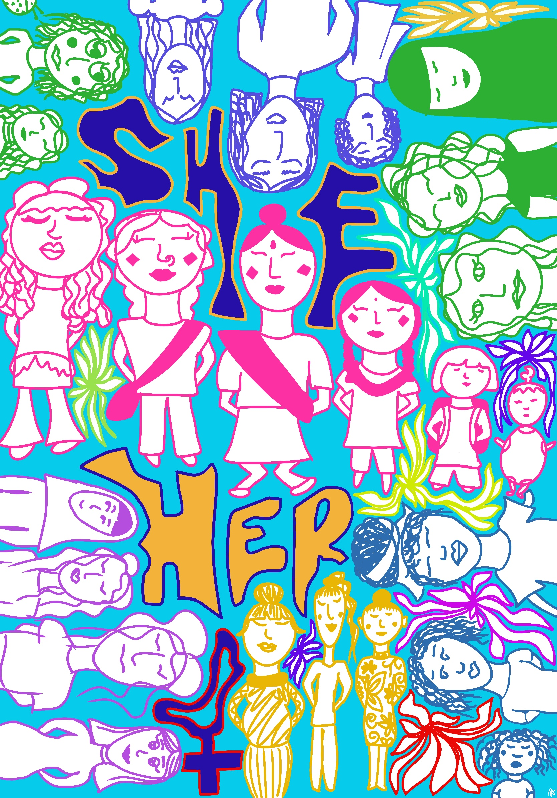
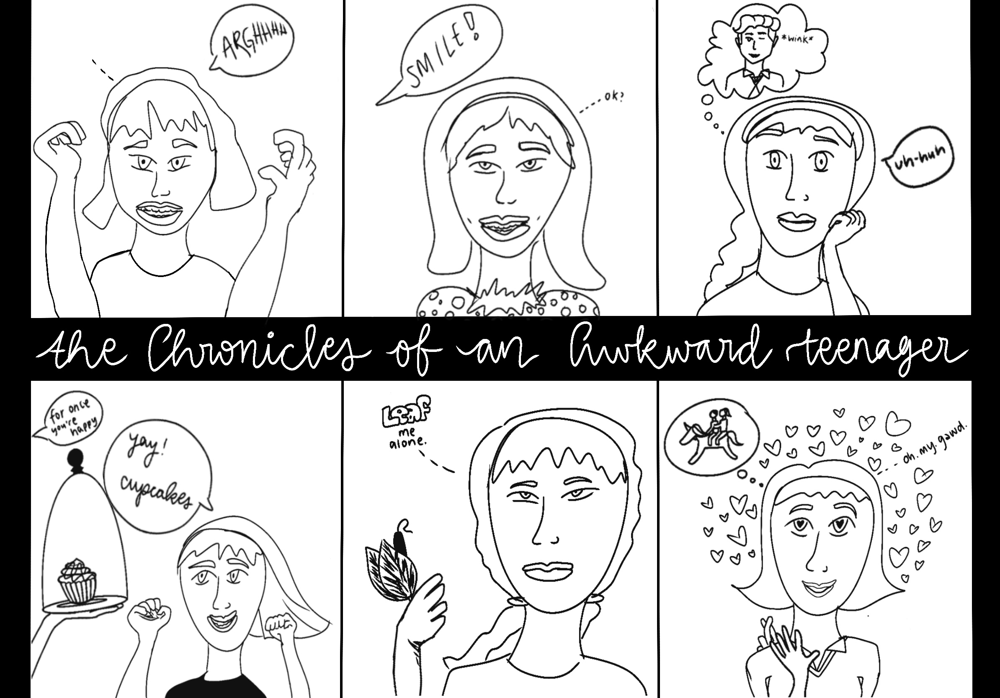
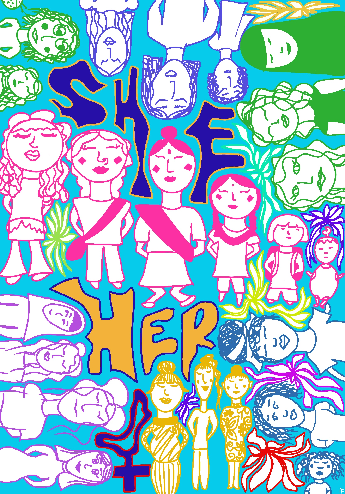

Digital Artwork & IB Art Portfolio
Digital illustrations, comparative study, and IB Art portfolio slides


 





Exploring creative expression through digital media and IB Art projects.
Digital illustrations, comparative study, and IB Art portfolio slides

